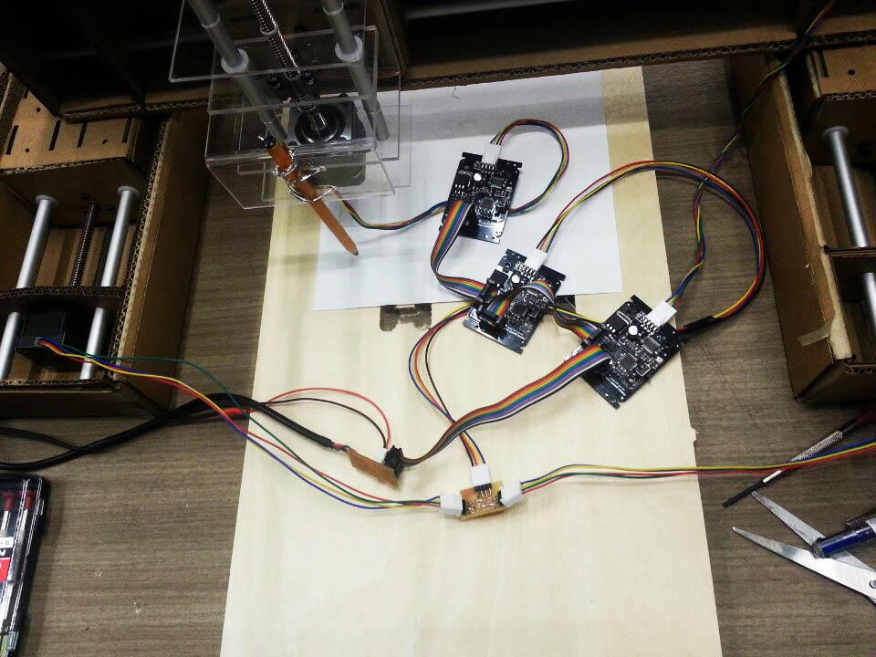

Quick laser-cutted cardboard for supporting the back was needed to hold tight of two gestalt nodes. Editing polylines by measuring the height and width of gestalt nodes it was ready to be used.
For doing the Z axis we designed the acrylic stand which holds the height stepper motor.
Foam cutter was then used to make acrylic in 90 degrees. With caution and having one person to hold the weight acrylic bent the way we intended.
The difference between cardboard and acrylic was obvious we could squeeze in the bearing but acrylic doesn't, therefore giving it a tolerance test was needed to fit the circle hole. Stepper motor was then assembled and we intend to make the movement only betwen acrylic barriers. Which is way more than we need for holding a pen and lowering the z-axis for actual drawing.

Specially designed PCB is for connencting two vertical axes.
Testing with codes to draw Korean letter 'GA'
, we used xyz-test.py code to make the gestalt nodes to move and with an specially designed PCB we shared both vertical nodes that are used for y-axes It's giving the same order as we intended. It was a quick and easy way to move 4nodes at the same time.
TESTING THE MACHINE
Testing with codes to draw Korean letter 'GA'
, we used xyz-test.py code to make the gestalt nodes to move and with an specially designed PCB we shared both vertical nodes that are used for y-axes It's giving the same order as we intended. It was a quick and easy way to move 4nodes at the same time.
Designed and modified by Sungeun Lee, Donghyun Kim, Yongwoo Song with Eduardo Charmorro Martin. Thank you